감정평가사-1차-2교시 (2014-07-05 기출문제)
1과목: 감정평가관계법규
1. 국토의 계획 및 이용에 관한 법령상 처분에 앞서 반드시 청문을 하여야 하는 경우가 아닌 것은?
- 개발행위허가의 취소
- 실시계획인가의 취소
- 토지거래계약 허가의 취소
- 개발밀도관리구역 지정의 취소
- 행정청이 아닌 도시ㆍ군계획시설사업의 시행자 지정의 취소
(정답률: 알수없음)

2. 국토의 계획 및 이용에 관한 법령상 제1종일반주거지역 안에서 건축할 수 있는 건축물이 아닌 것은? (단, 조례는 고려하지 않음)
- 아파트
- 단독주택
- 제1종 근린생활시설
- 고등학교
- 노유자시설
(정답률: 알수없음)
3. 국토의 계획 및 이용에 관한 법령상 용도지역별 건폐율의 상한(上限)을 비교한 것으로 옳은 것은? (단, 개별 조례의 규정은 고려하지 않음)
- 준공업지역 ＞ 준주거지역 ＞ 제3종일반주거지역 = 제2종일반주거지역
- 준공업지역 = 준주거지역 ＞ 제3종일반주거지역 ＞ 제2종일반주거지역
- 준공업지역 = 준주거지역 ＞ 제2종일반주거지역 ＞ 제3종일반주거지역
- 준주거지역 ＞ 준공업지역 ＞ 제3종일반주거지역 ＞ 제2종일반주거지역
- 준주거지역 ＞ 준공업지역 ＞ 제3종일반주거지역 = 제2종일반주거지역
(정답률: 알수없음)
4. 국토의 계획 및 이용에 관한 법령상 광역도시계획에 관한 설명으로 옳은 것은?
- 특별시장ㆍ광역시장ㆍ특별자치시장ㆍ특별자치도지사ㆍ시장 또는 군수는 광역계획권을 지정할 수 있다.
- 광역계획권을 지정한 날부터 2년이 지날 때까지 관할 시ㆍ도지사로부터 광역도시계획의 승인 신청이 없는 경우에는 국토교통부장관이 수립한다.
- 광역계획권을 지정한 날부터 3년이 지날 때까지 관할 시장 또는 군수로부터 광역도시계획의 승인 신청이 없는 경우에는 국토교통부장관이 수립한다.
- 국가계획과 관련된 광역도시계획의 수립이 필요한 경우에는 국토교통부장관이 직접 또는 관계 중앙행정기관의 장과 공동으로 수립한다.
- 광역계획권이 둘 이상의 시ㆍ도의 관할 구역에 걸쳐 있는 경우에는 관할 시ㆍ도지사가 공동으로 수립한다.
(정답률: 알수없음)
5. 국토의 계획 및 이용에 관한 법령상 자연취락지구 안의 주민의 생활편익과 복지증진 등을 위하여 국가 또는 지방자치단체가 시행하거나 지원할 수 있는 사업으로 옳은 것을 모두 고른 것은?
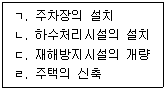
- ㄱ, ㄹ
- ㄴ, ㄷ
- ㄱ, ㄴ, ㄷ
- ㄴ, ㄷ, ㄹ
- ㄱ, ㄴ, ㄷ, ㄹ
(정답률: 알수없음)
6. 국토의 계획 및 이용에 관한 법령상 용도지역에 관하여 옳게 연결된 것은?
- 제1종전용주거지역 - 저층주택 중심의 양호한 주거환경을 보호하기 위하여 필요한 지역
- 제3종일반주거지역 - 중고층주택을 중심으로 편리한 주거환경을 조성하기 위하여 필요한 지역
- 준주거지역 - 주거기능을 위주로 이를 지원하는 일부 상업기능 및 공업기능을 보완하기 위하여 필요한 지역
- 준공업지역 - 주로 중화학공업, 공해성공업 등을 수용하기 위하여 필요한 지역
- 자연녹지지역 - 도시의 자연환경ㆍ경관ㆍ산림 및 녹지공간을 보전할 필요가 있는 지역
(정답률: 알수없음)
7. 국토의 계획 및 이용에 관한 법령상 도시지역의 지구단위계획구역에서 건축물을 건축하려는 자가 1,000제곱미터의 대지 중 400제곱미터를 공공시설 부지로 제공하는 경우 그 건축물에 적용되는 최대 용적률은? (단, 당해 대지 및 공공시설 제공 부지에 적용되는 용적률은 100퍼센트이고, 용적률의 상한은 고려하지 않음)
- 140퍼센트
- 160퍼센트
- 180퍼센트
- 200퍼센트
- 220퍼센트
(정답률: 알수없음)
8. 국토의 계획 및 이용에 관한 법령상 도시ㆍ군기본계획에 포함되어야 하는 내용으로 옳은 것을 모두 고른 것은?
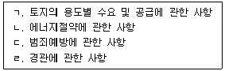
- ㄱ, ㄹ
- ㄴ, ㄷ
- ㄱ, ㄴ, ㄷ
- ㄴ, ㄷ, ㄹ
- ㄱ, ㄴ, ㄷ, ㄹ
(정답률: 알수없음)
9. 국토의 계획 및 이용에 관한 법령상 기반시설부담구역에 설치가 필요한 기반시설에 해당하지 않는 것은?
- 도로
- 공원
- 대학
- 폐기물처리시설
- 하수도
(정답률: 알수없음)
10. 국토의 계획 및 이용에 관한 법령상 반드시 지구단위계획구역으로 지정해야 하는 지역에 해당하지 않는 것은? (단, 당해 지역에 토지 이용과 건축에 관한 계획이 수립되어 있는 경우가 아님)
- 개발제한구역ㆍ도시자연공원구역ㆍ시가화조정구역 또는 공원에서 해제되는 구역 중 계획적인 개발 또는 관리가 필요한 지역
- 「택지개발촉진법」에 따라 지정된 택지개발지구에서 시행되는 사업이 끝난 후 10년이 지난 지역
- 도시지역의 체계적ㆍ계획적인 개발 또는 관리가 필요한 지역으로서 녹지지역에서 주거지역으로 변경되는 지역 중 그 면적이 30만제곱미터 이상인 지역
- 도시지역의 체계적ㆍ계획적인 개발 또는 관리가 필요한 지역으로서 녹지지역에서 공업지역으로 변경되는 지역 중 그 면적이 30만제곱미터 이상인 지역
- 「도시 및 주거환경정비법」에 따라 지정된 정비구역에서 시행되는 사업이 끝난 후 10년이 지난 지역
(정답률: 알수없음)
11. 국토의 계획 및 이용에 관한 법령상 도시ㆍ군계획시설사업의 시행에 관한 설명으로 옳지 않은 것은?
- 도시ㆍ군계획시설결정의 고시일로부터 2년 이내에 사업의 시행에 대한 단계별 집행계획이 수립되어야 한다.
- 시행자는 사업을 효율적으로 추진하기 위하여 필요하다고 인정되면 사업시행대상지역을 둘 이상으로 분할하여 사업을 시행할 수 있다.
- 사업으로 인하여 기반시설의 설치가 필요한 경우 사업의 시행자인 지방자치단체는 그 이행의 담보를 위한 이행보증금을 예치하여야 한다.
- 시행자는 사업시행을 위하여 특히 필요하다고 인정되면 도시ㆍ군계획시설에 인접한 토지를 일시 사용할 수 있다.
- 사업의 착수예정일의 변경을 내용으로 하는 실시계획 변경인가를 하는 경우에는 그에 대한 공고 및 열람을 하지 아니할 수 있다.
(정답률: 알수없음)
12. 국토의 계획 및 이용에 관한 법령상 계획의 수립 또는 변경시 반드시 공청회를 개최하여야 하는 것을 모두 고른 것은?
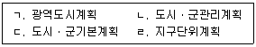
- ㄱ, ㄴ
- ㄱ, ㄷ
- ㄴ, ㄷ
- ㄴ, ㄹ
- ㄷ, ㄹ
(정답률: 알수없음)
13. 국토의 계획 및 이용에 관한 법령상 아래의 내용이 설명하는 것은?
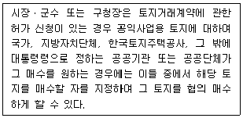
- 선매
- 수용
- 매수청구
- 환매
- 공용취득
(정답률: 알수없음)
14. 국토의 계획 및 이용에 관한 법령상 성장관리방안에 관한 설명으로 옳지 않은 것은?
- 성장관리방안은 국토교통부장관 또는 시ㆍ도지사가 수립한다.
- 도로, 공원 등 기반시설의 배치와 규모에 관한 사항은 성장관리방안에 포함되어야 한다.
- 성장관리방안을 수립한 지역에서 하는 개발행위는 중앙도시계획위원회와 지방도시계획위원회의 심의를 거치지 아니한다.
- 성장관리방안이 수립된 계획관리지역의 경우 해당 지방자치단체의 조례로 건폐율 및 용적률을 완화하여 적용할 수 있다.
- 성장관리방안을 수립하거나 변경한 경우에는 이를 고시하고 일반인이 열람할 수 있도록 하여야 한다.
(정답률: 알수없음)
15. 국토의 계획 및 이용에 관한 법령상 도시ㆍ군계획시설사업의 비용 부담에 관한 설명으로 옳지 않은 것은?
- 도시ㆍ군계획시설사업을 지방자치단체가 하는 경우에는 해당 지방자치단체가 그에 관한 비용을 부담함을 원칙으로 한다.
- 국토교통부장관은 그가 시행한 도시ㆍ군계획시설사업으로 현저히 이익을 받는 시ㆍ도가 있으면 사업에 소요된 비용의 50퍼센트를 넘지 않는 범위 안에서 그 비용의 일부를 이익을 받는 시ㆍ도에 부담시킬 수 있다.
- 행정청이 아닌 자가 시행하는 도시ㆍ군계획시설사업으로 공공시설의 관리자가 현저한 이익을 받았을 때 시행자는 사업에 소요된 비용의 3분의 1을 넘지 않는 범위 안에서 그 비용의 일부를 관리자에게 부담시킬 수 있다.
- 행정청이 시행하는 도시ㆍ군계획시설사업에 드는 비용은 소요비용의 50퍼센트 이하의 범위 안에서 국가예산으로 보조하거나 융자할 수 있다.
- 행정청이 아닌 자가 시행하는 도시ㆍ군계획시설사업에 드는 비용은 소요비용의 3분의 1 이하의 범위 안에서 국가 또는 지방자치단체가 보조하거나 융자할 수 있다.
(정답률: 알수없음)
16. 국토의 계획 및 이용에 관한 법령상 용도구역에 관한 설명으로 옳은 것은?
- 도시의 자연환경 및 경관을 보호하고 도시민에게 건전한 여가ㆍ휴식공간을 제공하기 위하여 도시지역 안에서 식생이 양호한 산지의 개발을 제한할 필요가 있다고 인정되는 지역을 개발제한구역으로 지정할 수 있다.
- 국방부장관의 요청에 따라 국토교통부장관이 개발제한구역을 지정하는 경우에는 이를 광역도시계획으로 결정한다.
- 국토교통부장관은 도시자연공원구역의 지정을 도시ㆍ군관리계획으로 결정할 수 있다.
- 시가화조정구역의 시가화 유보기간은 10년 이상 20년 이내이다.
- 시가화조정구역의 지정에 관한 도시ㆍ군관리계획의 결정은 시가화 유보기간이 끝난 날의 다음날부터 그 효력을 잃는다.
(정답률: 알수없음)
17. 부동산 가격공시 및 감정평가에 관한 법령상 지가의 공시에 관한 설명으로 ( )에 알맞은 것은?
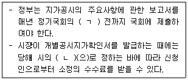
- ㄱ: 개회 30일, ㄴ: 규칙
- ㄱ: 개회, ㄴ: 규칙
- ㄱ: 개회 30일, ㄴ: 조례
- ㄱ: 개회, ㄴ: 조례
- ㄱ: 폐회, ㄴ: 조례
(정답률: 알수없음)
18. 부동산 가격공시 및 감정평가에 관한 법령상 시장ㆍ군수 또는 구청장으로부터 개별공시지가의 검증의뢰를 받은 감정평가업자가 검토ㆍ확인하고 의견을 제시하여야 할 사항이 아닌 것은?
- 비교표준지의 선정에 관한 사항
- 개별토지의 가격산정의 적정성에 관한 사항
- 토지가격비준표의 사용에 관한 사항
- 산정한 개별토지의 가격과 표준지공시지가의 균형유지에 관한 사항
- 산정한 개별토지의 가격과 인근토지의 지가 및 전년도 지가와의 균형유지에 관한 사항
(정답률: 알수없음)
19. 부동산 가격공시 및 감정평가에 관한 법령상 표준지 적정가격의 조사ㆍ평가에 관한 설명으로 옳지 않은 것은?
- 국토교통부장관이 감정평가업자에게 의뢰한 표준지의 적정가격은 감정평가업자가 제출한 조사ㆍ평가액 중 가장 높은 가격을 기준으로 한다.
- 국토교통부장관이 표준지의 적정가격을 조사ㆍ평가하고자 할 때에는 둘 이상의 감정평가업자에게 이를 의뢰하여야 한다.
- 감정평가업자가 표준지조사평가보고서를 제출하고자 하는 때에는 미리 당해 표준지를 관할하는 시장ㆍ군수 또는 구청장의 의견을 들어야 한다.
- 표준지조사평가보고서에는 지역분석조서가 첨부되어야 한다.
- 표준지의 적정가격 평가시 표준지에 지상권이 설정되어 있는 때에는 당해 지상권이 존재하지 아니하는 것으로 보고 적정가격을 평가하여야 한다.
(정답률: 알수없음)
20. 부동산 가격공시 및 감정평가에 관한 법령상 중앙부동산평가위원회의 심의대상이 아닌 것은?
- 표준주택의 선정 및 관리지침에 관한 사항
- 개별주택가격에 대한 이의신청에 관한 사항
- 부동산평가에 관한 법령안 입안에 관한 사항
- 감정평가사 제2차 시험의 최소합격인원에 관한 사항
- 감정평가업자의 직무수행에 따른 출장에 소요된 실비의 범위에 관한 사항
(정답률: 알수없음)
21. 부동산 가격공시 및 감정평가에 관한 법령상 감정평가법인에 관한 설명으로 옳은 것은?
- 감정평가사가 아닌 자는 감정평가법인의 대표이사가 될 수 없다.
- 감정평가법인에는 15인 이상의 감정평가사를 두어야 한다.
- 감정평가법인이 주주총회의 의결에 따라 다른 감정평가법인과 합병하는 경우에는 합병 후 7일 이내에 국토교통부장관에게 이를 신고하여야 한다.
- 감정평가법인의 주사무소에 주재하는 법정 최소 감정평가사의 수는 2명이다.
- 감정평가법인의 자본금은 3억원 이상이어야 한다.
(정답률: 알수없음)
22. 부동산 가격공시 및 감정평가에 관한 법령상 개별공시지가의 결정ㆍ공시 등에 관한 설명으로 옳지 않은 것은?
- 시장ㆍ군수 또는 구청장은 개별공시지가의 조사ㆍ산정지침을 정하여 감정평가업자에게 통보하여야 한다.
- 2013년의 공시기준일이 1월 1일인 경우 2013년 5월 15일 토지의 용도변경으로 지목변경이 된 토지에 대한 개별공시지가는 2013년 7월 1일을 기준일로 하여 2013년 10월 31일까지 결정ㆍ공시하여야 한다.
- 최근 2년간 업무정지처분을 3회 받은 감정평가업자는 개별토지가격 산정의 타당성 검증을 할 수 없다.
- 개별공시지가를 공시하는 시장ㆍ군수 또는 구청장은 필요하다고 인정하는 때에는 개별공시지가의 결정 및 이의신청에 관한 사항을 토지소유자등에게 개별통지할 수 있다.
- 감정평가업자는 개별공시지가의 결정을 위한 토지가격의 산정을 위하여 필요한 때에는 타인의 토지에 출입할 수 있다.
(정답률: 알수없음)
23. 부동산 가격공시 및 감정평가에 관한 법령상 감정평가사에 대한 징계의 종류 중 '자격의 취소'의 사유인 것은?
- 구비서류를 거짓으로 작성하여 감정평가사등록을 한 경우
- 업무정지처분 기간에 감정평가업자의 업무를 한 경우
- 감정평가업자가 감정평가사자격증을 다른 사람에게 대여한 경우
- 감정평가업자의 업무범위를 위반하여 업무를 수행한 경우
- 감정평가준칙을 위반하여 감정평가를 한 경우
(정답률: 알수없음)
24. 부동산 가격공시 및 감정평가에 관한 법령상 과징금의 부과 등에 관한 설명으로 옳은 것은?
- 감정평가업자가 위반행위로 취득한 이익의 규모를 고려하지 않고 과징금의 금액을 산정하여야 한다.
- 국토교통부장관은「부동산 가격공시 및 감정평가에 관한 법률」의 규정을 위반한 감정평가법인이 합병을 하는 경우 그 감정평가법인이 행한 위반행위는 합병 후 존속하거나 합병에 의하여 신설된 감정평가법인이 행한 행위로 보아 과징금을 부과ㆍ징수할 수 있다.
- 과징금납부의무자가 납부기한 내에 과징금을 납부하지 아니한 경우 국토교통부장관은 가산세를 징수할 수 있다.
- 과징금부과처분을 행정소송상 다투기 위해서는 소 제기에 앞서 반드시 행정심판을 거쳐야 한다.
- 과징금부과처분을 다투는 감정평가업자가 행정심판의 재결에 불복하는 경우 국토교통부장관에게 이의신청을 할 수 있다.
(정답률: 알수없음)
25. 국유재산법령상 일반재산에 관한 설명으로 옳은 것은?
- 조림을 목적으로 하는 일반재산인 토지는 20년간 대부할 수 있다.
- 증권을 제외한 일반재산을 처분할 때에 그 대장가격이 3천만원 미만인 경우에는 두 개의 감정평가법인의 평가액을 산술평균한 금액으로 예정가격을 결정한다.
- 일반재산인 토지와 사유재산인 토지를 교환할 때 쌍방의 가격이 같지 아니하면 그 차액을 금전, 증권 또는 현물로 대납(代納)할 수 있다.
- 일반재산을 매각하는 경우 매수자에게 그 재산의 용도와 그 용도에 사용하여야 할 기간을 정하여 매각하는 것은 허용되지 않는다.
- 중앙관서의 장이 소관 특별회계에 속하는 일반재산 중 일단의 토지면적이 4천제곱미터인 재산을 매각하려는 경우에는 총괄청과 협의하여야 한다.
(정답률: 알수없음)
26. 국유재산법령상 국유재산관리기금에 관한 설명으로 옳지 않은 것은?
- 국유재산관리기금은 국유재산의 취득에 필요한 비용의 지출에 사용할 수 있다.
- 국유재산관리기금은 총괄청 소관 일반재산의 관리ㆍ처분에 필요한 비용의 지출에 사용할 수 있다.
- 금융회사 등으로부터의 차입금은 국유재산관리기금의 재원에 해당한다.
- 총괄청은 국유재산관리기금의 결산보고서 작성에 관한 사무를 한국자산관리공사에 위탁한다.
- 국유재산관리기금에서 취득한 재산은 특별회계 소속으로 한다.
(정답률: 알수없음)
27. 국유재산법령상 국유재산의 구분과 종류에 관한 설명으로 옳은 것은?
- 국유재산은 그 형상에 따라 행정재산과 공공재산 및 일반재산으로 구분한다.
- 대통령 관저는 공용재산이 아니다.
- 국가가 비상근무에 종사하는 공무원에게 제공하는, 해당 근무지의 구내 또는 이와 인접한 장소에 설치된 주거용 시설은 공공용재산이다.
- 정부기업이 인사명령에 의하여 지역을 순환하여 근무하는 소속 직원의 주거용으로 사용하는 재산은 기업용재산이다.
- 국가가 보존할 필요가 있다고 국토교통부장관이 결정한 재산은 보존용재산이다.
(정답률: 알수없음)
28. 국유재산법상 행정재산에 관한 설명으로 옳지 않은 것은?
- 행정재산을 사용허가한 때에 징수하는 사용료는 선납하여야 한다.
- 중앙관서의 장은 그 소속 공무원에게 행정재산 관리에 관한 사무를 위임하거나 분장하게 한 경우에는 그 뜻을 국토교통부장관에게 통지하여야 한다.
- 중앙관서의 장은 공용ㆍ공공용ㆍ기업용 재산에 대하여 그 용도나 목적에 장애가 되지 아니하는 범위에서 사용허가를 할 수 있다.
- 행정재산에 대하여 주거용으로 사용허가를 하는 경우에는 수의(隨意)의 방법으로 사용허가를 받을 자를 결정할 수 있다.
- 중앙관서의 장은 행정재산으로 사용하기로 결정한 날부터 5년이 지난 날까지 행정재산으로 사용되지 아니한 경우에는 지체 없이 행정재산의 용도를 폐지한다.
(정답률: 알수없음)
29. 건축법령상 이행강제금에 관한 설명으로 옳지 않은 것은?
- 이행강제금은 건축허가 대상 건축물뿐만 아니라 건축신고 대상 건축물에 대해서도 부과할 수 있다.
- 연면적 85제곱미터 이하의 주거용 건축물인 경우에는 법정 이행강제금의 2분의 1의 범위에서 해당 지방자치단체의 조례로 정하는 금액을 부과한다.
- 허가권자는 이행강제금을 부과하기 전에 이행강제금을 부과ㆍ징수한다는 뜻을 미리 문서로써 계고하여야 한다.
- 허가권자는 위반 건축물에 대한 시정명령을 받은 자가 이를 이행하면 이미 부과된 이행강제금의 징수를 즉시 중지하여야 한다.
- 허가권자는 이행강제금 부과처분을 받은 자가 이행강제금을 납부기한까지 내지 아니하면 지방세 체납처분의 예에 따라 징수한다.
(정답률: 알수없음)
30. 건축법령상 건축 관련 입지와 규모의 사전결정에 관한 설명으로 옳지 않은 것은?
- 건축허가 대상 건축물을 건축하려는 자는 건축허가를 신청하기 전에 허가권자에게 그 건축물을 해당 대지에 건축하는 것이「건축법」이나 다른 법령에서 허용되는지에 대한 사전결정을 신청할 수 있다.
- 사전결정신청자는 건축위원회 심의와「도시교통정비 촉진법」에 따른 교통영향분석ㆍ개선대책의 검토를 동시에 신청할 수 있다.
- 허가권자는 사전결정이 신청된 건축물의 대지면적이「환경영향평가법」에 따른 소규모 환경영향평가 대상사업인 경우 환경부장관이나 지방환경관서의 장과 소규모 환경영향평가에 관한 협의를 하여야 한다.
- 사전결정 통지를 받은 경우에도「국토의 계획 및 이용에 관한 법률」에 따른 개발행위허가는 따로 받아야 한다.
- 사전결정신청자가 사전결정을 통지받은 날부터 2년 이내에 건축허가를 신청하지 아니하면 사전결정의 효력이 상실된다.
(정답률: 알수없음)
31. 건축법령상 건축물의 용도변경으로서 허가대상인 것을 모두 고른 것은?
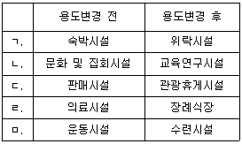
- ㄱ, ㄴ, ㅁ
- ㄱ, ㄷ, ㄹ
- ㄴ, ㄷ, ㄹ
- ㄴ, ㄹ, ㅁ
- ㄷ, ㄹ, ㅁ
(정답률: 알수없음)
32. 건축법령상 용어에 관한 설명으로 옳은 것은?
- '이전'은 건축물의 주요구조부를 해체하여 같은 대지의 다른 위치로 옮기는 것을 말한다.
- 건축물의 피난계단을 증설하는 것은 '증축'에 해당한다.
- '개축'은 건축물이 천재지변으로 멸실된 경우 그 대지에 종전과 같은 규모의 범위에서 다시 축조하는 것을 말한다.
- 건축물의 바닥이 지표면 아래에 있는 층으로서 바닥에서 지표면까지 평균높이가 해당 층 높이의 3분의 1인 것은 '지하층'에 해당한다.
- 바닥(최하층 바닥은 제외)은 '주요구조부'에 해당한다.
(정답률: 알수없음)
33. 측량ㆍ수로조사 및 지적에 관한 법령상 토지의 용도와 지목이 옳게 연결된 것은?
- 물을 상시적으로 이용하지 않고 과수류를 집단적으로 재배하는 토지 - 전
- 묘지의 관리를 위한 건축물의 부지 - 대
- 식용으로 죽순을 재배하는 토지 - 과수원
- 자동차정비공장 내 급유시설부지 - 주유소용지
- 종교용지로 된 토지에 있는 유적을 보호하기 위하여 구획된 토지 - 사적지
(정답률: 알수없음)
34. 측량ㆍ수로조사 및 지적에 관한 법령상 부동산종합공부에 관한 설명으로 옳지 않은 것은?
- 지적소관청은 부동산종합공부를 영구히 보존하여야 한다.
- 지적공부의 내용 중 토지의 소유자에 관한 사항은 부동산종합공부의 등록사항이다.
- 토지이용계획확인서의 내용 중 토지의 이용 및 규제에 관한 사항은 부동산종합공부의 등록사항이다.
- 부동산종합증명서를 발급받으려는 자는 지적소관청 이외에 읍ㆍ면ㆍ동의 장에게도 신청할 수 있다.
- 부동산종합공부의 등록사항에 잘못이 있는 경우에는 지적소관청의 직권정정만 허용된다.
(정답률: 알수없음)
35. 측량ㆍ수로조사 및 지적에 관한 법령상 토지대장과 공유지연명부의 공통적인 등록사항이 아닌 것은?
- 토지의 소재
- 지번
- 지목
- 소유자의 성명 또는 명칭
- 토지의 고유번호
(정답률: 알수없음)
36. 측량ㆍ수로조사 및 지적에 관한 법령상 '6-1, 7-2, 8-3, 10, 11'의 지번이 각각 부여되어 있는 인접한 나대지들을 하나로 합병할 경우 부여하여야 할 지번은?
- 6-1
- 8-3
- 10
- 11
- 12
(정답률: 알수없음)
37. 부동산등기법령상 부동산의 표시에 관한 변경등기에 대한 설명으로 옳은 것은?
- 토지의 지번에 변경이 있는 경우 토지 소유권의 등기명의인은 그 사실이 있는 때부터 1개월 이내에 변경등기를 신청하여야 한다.
- 등기관이 지적소관청으로부터 토지의 표시와 지적공부가 일치하지 아니하다는 사실을 통지받은 경우에는 통지받은 날로부터 1개월 이내에 직권으로 표시변경의 등기를 하여야 한다.
- 등기관이 직권으로 토지의 표시변경등기를 하였을 때에 등기명의인이 2인 이상인 경우에는 변경등기의 사실을 그 모두에게 통지하여야 한다.
- 전세권에 관한 등기가 있는 건물에 관하여는 합병의 등기를 할 수 없다.
- 구분건물로서 그 대지권의 변경이 있는 경우 구분건물의 소유권의 등기명의인은 1동의 건물에 속하는 다른 구분건물의 소유권의 등기명의인을 대위하여 변경등기를 신청할 수 없다.
(정답률: 알수없음)
38. 부동산등기법령상 미등기의 부동산에 대한 소유권보존등기를 신청할 수 있는 자에 해당하지 않는 것은?
- 토지대장에 최초의 소유자로 등록되어 있는 자
- 토지대장에 최초의 소유자로 등록되어 있는 자로부터 양수한 자
- 확정판결에 의하여 자기의 소유권을 증명하는 자
- 수용으로 인하여 소유권을 취득하였음을 증명하는 자
- 시장의 확인에 의하여 건물에 대한 자기의 소유권을 증명하는 자
(정답률: 알수없음)
39. 부동산등기법령상 가등기에 관한 설명으로 옳지 않은 것은?
- 가등기권리자는 가등기의무자의 승낙이 있을 때에는 단독으로 가등기를 신청할 수 있다.
- 가등기에 의한 본등기를 한 경우 본등기의 순위는 가등기의 순위에 따른다.
- 가등기명의인은 단독으로 가등기의 말소를 신청할 수 있다.
- 가등기에 의한 본등기가 이루어졌을 때 가등기 이후에 된 등기로서 가등기에 의하여 보전되는 권리를 침해하는 등기에 대해서는 등기상 이해관계인의 신청에 의하여 등기관이 이를 말소한다.
- 소유권 이전을 위한 정지조건부 청구권을 보전하기 위한 가등기도 가능하다.
(정답률: 알수없음)
40. 부동산등기법령상 등기의 신청 등에 관한 설명으로 옳지 않은 것은?
- 등기원인이 발생한 후에 등기권리자에 대하여 상속이 있는 경우에는 상속인이 그 등기를 신청할 수 있다.
- 관리인이 있는 법인 아닌 재단에 속하는 부동산의 등기에 관하여는 그 재단을 등기권리자 또는 등기의무자로 한다.
- 채권자는 채무자를 대위하여 등기를 신청할 수 있다.
- 등기신청의 취하는 등기관이 등기를 마치기 전까지 할 수 있다.
- 같은 채권의 담보를 위하여 소유자가 다른 여러 개의 부동산(같은 등기소의 관할 내에 소재함)에 대한 저당권설정등기를 신청하는 경우에는 1건당 1개의 부동산에 관한 신청정보를 제공하는 방법으로 등기를 신청하여야 한다.
(정답률: 알수없음)
2과목: 회계학
41. 재무보고를 위한 개념체계상 유용한 정보의 질적 특성에 관한 설명으로 옳지 않은 것은?
- 충실한 표현은 모든 면에서 정확한 것을 의미하지는 않는다.
- 중요성은 개별 기업 재무보고서 관점에서 해당 정보와 관련된 항목의 성격이나 규모 또는 이 둘 모두에 근거하여 해당 기업에 특유한 측면의 목적적합성을 의미한다.
- 완전한 서술은 필요한 기술과 설명을 포함하여 정보이용자가 서술되는 현상을 이해하는 데 필요한 모든 정보를 포함하는 것이다.
- 중립적 정보는 목적이 없거나 행동에 대한 영향력이 없는 정보를 의미하지 않는다.
- 재무정보의 비교가능성은 정보이용자가 항목 간의 차이점을 식별하고 이해할 수 있게 하는 질적 특성으로 비슷한 것을 달리 보이게 함으로써 보강된다.
(정답률: 알수없음)
42. 다음은 (주)감평의 20×1년도 재무제표 자료의 일부이다. 
20×1년도에 보험료 및 임대료와 관련하여 발생한 순현금흐름(유입-유출)은?
- ￦500
- ￦1,000
- ￦1,500
- ￦2,000
- ￦2,500
(정답률: 알수없음)
43. (주)한국은 20×2년 10월 1일 (주)세종에 상품을 매출하고 동일자에 액면금액 ￦1,000,000, 표시이자율 연 6%, 만기일 20×3년 1월 31일인 받을어음을 수취하였다. (주)한국은 동 받을어음을 20×2년 11월 1일에 대한은행에서 연 8%로 할인하는 차입거래로 자금을 조달하였다. (주)한국이 20×2년 11월 1일에 수령할 현금수취액과 이 거래로 20×2년에 이자비용(할인료)으로 인식할 금액은? (단, 이자는 월할계산한다.)
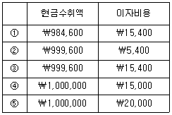
- ①
- ②
- ③
- ④
- ⑤
(정답률: 알수없음)
44. 투자부동산에 해당하지 않는 것은?
- 장기 시세차익을 얻기 위하여 보유하고 있는 토지(단, 정상적인 영업과정에서 단기간에 판매하기 위하여 보유하는 토지는 제외)
- 미래에 개발 후 자가사용할 부동산
- 미래에 투자부동산으로 사용하기 위하여 건설 또는 개발중인 부동산
- 직접 소유(또는 금융리스를 통해 보유)하고 운용리스로 제공하고 있는 건물
- 장래 사용목적을 결정하지 못한 채로 보유하고 있는 토지
(정답률: 알수없음)
45. 유형자산에 관한 설명으로 옳은 것은?
- 유형자산은 다른 자산의 미래경제적효익을 얻기 위해 필요하더라도, 그 자체로의 직접적인 미래경제적효익을 얻을 수 없다면 인식할 수 없다.
- 유형자산이 경영진이 의도하는 방식으로 가동될 수 있으나 가동수준이 완전조업도 수준에 미치지 못하는 경우에 발생하는 원가는 유형자산 원가에 포함한다.
- 유형자산의 원가는 경영진이 의도하는 방식으로 자산을 가동하는 데 필요한 장소와 상태에 이르게 하는 데 직접 관련되는 원가를 포함하며, 해당 자산의 시험과정에서 생산된 시제품의 순매각금액은 차감한다.
- 건설이 시작되기 전에 건설용지를 주차장 용도로 사용함에 따라 획득한 수익은 유형자산의 원가에서 차감한다.
- 교환거래에 상업적 실질이 있는지 여부를 결정할 때 교환거래의 영향을 받는 영업 부분의 기업특유가치는 세전현금흐름을 반영하여야 한다.
(정답률: 알수없음)
46. 재무제표 표시에 관한 설명으로 옳은 것은?
- 부적절한 회계정책은 이에 대하여 공시나 주석 또는 보충 자료를 통해 설명함으로써 정당화될 수 있다.
- 비유동자산의 처분손익을 처분대금에서 그 자산의 장부금액과 관련처분비용을 차감하여 표시하는 것은 총액주의에 위배되므로 허용되지 아니한다.
- 재무제표 항목의 표시와 분류는 한국채택국제회계기준에서 표시방법의 변경을 요구하는 경우 이외에는 매기 동일하여야 한다.
- 기업이 기존의 대출계약조건에 따라 보고기간 후 적어도 12개월 이상 부채를 차환하거나 연장할 것으로 기대하고 있고, 그런 재량권이 있다하더라도, 보고기간 후 12개월 이내에 만기가 도래한다면 유동부채로 분류한다.
- 단기매매 금융상품에서 발생하는 손익과 같이 유사한 거래의 집합에서 발생하는 차익과 차손은 순액으로 표시한다. 그러나 그러한 차익과 차손이 중요한 경우에는 구분하여 표시한다.
(정답률: 알수없음)
47. 유형자산의 재평가 회계처리에 관한 설명으로 옳은 것은?
- 재평가는 자산의 장부금액이 공정가치와 중요하게 차이가 나지 않도록 매 보고기간말에 수행한다.
- 특정 유형자산을 재평가할 때, 해당 자산이 포함되는 유형자산 분류 전체를 재평가할 필요는 없으며, 개별 유형자산별로 재평가모형을 선택하는 것이 가능하다.
- 자산의 장부금액이 재평가로 인하여 증가된 경우에 그 증가액은 동일한 자산에 대하여 이전에 당기손익으로 인식한 재평가감소액이 있다 하더라도 기타포괄손익으로 인식하고 재평가잉여금의 과목으로 자본에 가산한다.
- 자산의 장부금액이 재평가로 인하여 감소된 경우에 그 감소액은 당기손익으로 인식한다. 그러나 그 자산에 대한 재평가잉여금의 잔액이 있다면 그 금액을 한도로 재평가감소액을 기타포괄손익으로 인식한다.
- 자본에 계상된 재평가잉여금은 그 자산이 제거될 때 이익잉여금으로 대체할 수 있다. 그러나 기업이 그 자산을 사용함에 따라 재평가잉여금의 일부를 대체할 수도 있다.
(정답률: 알수없음)
48. (주)대한은 (주)세종의 주식을 다음과 같이 취득 및 처분하였다. 20×1년 3월 1일 이전에 보유하고 있는 (주)세종의 주식은 없으며, (주)대한은 (주)세종의 주식을 단기매매증권으로 구분하였다. 일자별 자료는 다음과 같다. 
(주)대한은 주식의 단가산정과 관련하여 이동평균법을 이용한다. (주)대한이 20×1년 포괄손익계산서에 인식할 단기매매증권평가손익은?
- 평가이익 ￦5,200
- 평가이익 ￦11,200
- 평가손실 ￦10,200
- 평가손실 ￦12,200
- 평가손실 ￦15,200
(정답률: 알수없음)
49. (주)감평은 20×1년 초에 차량운반구를 ￦10,000,000에 취득하였다. 취득시에 차량운반구의 내용연수는 5년, 잔존가치는 ￦1,000,000, 감가상각방법은 연수합계법이다. 20×4년 초에 (주)감평은 차량운반구의 내용연수를 당초 5년에서 7년으로, 잔존가치는 ￦500,000으로 변경하였다. (주)감평이 20×4년에 인식할 차량운반구에 대한 감가상각비는?
- ￦575,000
- ￦700,000
- ￦920,000
- ￦990,000
- ￦1,120,000
(정답률: 알수없음)
50. (주)서울은 20×1년 2월 1일에 총계약금액 ￦6,000의 공장건설계약을 수주하였다. 이 공장은 20×3년 말에 완공될 예정이며, 건설에 소요될 원가는 ￦4,000으로 추정되었으며, 관련 자료는 다음과 같다. 
(주)서울은 이 계약에 대해 진행기준에 따라 수익을 인식한다면, 20×2년의 건설계약이익은?
- ￦210
- ￦628
- ￦750
- ￦960
- ￦1,350
(정답률: 알수없음)
51. 재고자산에 관한 설명으로 옳은 것은?
- 후속 생산단계에 투입하기 전에 보관이 필요한 경우 이외의 보관원가는 재고자산의 취득원가에 포함할 수 있다.
- 확정판매계약을 이행하기 위하여 보유하는 재고자산의 순실현가능가치는 계약가격에 기초하며, 확정판매계약의 이행에 필요한 수량을 초과하는 경우에는 일반 판매가격에 기초한다.
- 재고자산의 지역별 위치나 과세방식이 다른 경우 동일한 재고자산에 다른 단위원가 결정방법을 적용할 수 있다.
- 가중평균법의 경우 재고자산 원가의 평균은 기업의 상황에 따라 주기적으로 계산하거나 매입 또는 생산할 때마다 계산하여서는 아니된다.
- 완성될 제품이 원가 이상으로 판매될 것으로 예상하는 경우에는 해당 원재료를 순실현가능가치로 감액한다.
(정답률: 알수없음)
52. (주)한영의 20×1년의 기초재고액은 ￦200,000, 당기매입액은 ￦500,000이며, 기말 실사 결과 창고에 보유 중인 재고자산은 ￦50,000이다. 당기 말 현재 재고자산 관련 추가 자료는 다음과 같다. 
위 자료를 이용할 때 매출원가는?
- ￦400,000
- ￦420,000
- ￦440,000
- ￦460,000
- ￦500,000
(정답률: 알수없음)
53. (주)한국은 결산을 앞두고 당좌예금의 계정 잔액을 조정하기 위해 은행에 예금 잔액을 조회한 결과 20×1년 12월 31일 잔액은 ￦125,400이라는 회신을 받았다. (주)한국의 당좌예금 장부상의 수정전 잔액은 ￦149,400이다. (주)한국의 내부감사인은 차이의 원인에 대해 분석하였고, 다음과 같은 사실을 확인하였다. 
위 자료를 이용할 때 20×1년 말 (주)한국의 수정후 당좌예금 잔액은?
- ￦134,400
- ￦140,400
- ￦158,400
- ￦168,400
- ￦171,400
(정답률: 알수없음)
54. (주)감평은 20×1년에 전기온수매트 100개를 개당 ￦200,000에 현금 판매하였다. 제품보증기간은 2년이며, 판매가격에는 제품보증활동과 관련한 대가로 개당 ￦20,000(보증비용은 개당 ￦10,000이 소요)이 포함되어 있다. 20×1년 중 보증비용이 ￦200,000 발생하였으며, (주)감평이 이연수익법(보증수익인식법)으로 회계처리하는 경우 20×1년도에 인식할 제품보증수익은?
- ￦200,000
- ￦250,000
- ￦300,000
- ￦350,000
- ￦400,000
(정답률: 알수없음)
55. (주)신성축산은 20×1년 1월 초에 수익용으로 젖소를 ￦1,500,000에 매입하였는데, 그 젖소는 농림어업자산의 인식요건을 충족한다. 20×1년 12월 31일 젖소의 공정가치는 ￦2,250,000이며 사육에 소요된 비용은 ￦450,000이다. 20×1년 12월 말에 젖소로부터 원유를 생산하기 시작하였으며, 생산된 원유를 공정가치 ￦300,000에 판매하였다. 판매를 위해 ￦50,000의 비용이 발생되었다면, 20×1년도 (주)신성축산의 당기순이익은?
- ￦300,000
- ￦550,000
- ￦600,000
- ￦1,000,000
- ￦1,⑤0,000
(정답률: 알수없음)
56. 수익에 관한 설명으로 옳지 않은 것은?
- 인도된 재화의 결함에 대하여 정상적인 품질보증범위를 초과하여 책임을 지는 경우에는 수익을 인식하지 않는다.
- 판매대금의 회수가 구매자의 재판매에 의해 결정되는 경우에는 수익을 인식하지 않는다.
- 설치조건부 판매에서 계약의 중요한 부분을 차지하는 설치가 아직 완료되지 않은 경우에는 수익을 인식하지 않는다.
- 판매자가 판매대금의 회수를 확실히 할 목적만으로 해당 재화의 법적 소유권을 계속 가지고 있더라도 소유에 따른 중요한 위험과 보상이 이전되었다면 해당 거래를 판매로 보아 수익을 인식한다.
- 수익은 기업이 받았거나 받을 경제적효익의 총유입을 포함하므로, 판매세, 특정재화나 용역과 관련된 세금, 부가가치세와 같이 제3자를 대신하여 받는 금액도 기업에 유입된 경제적효익이므로 기타수익에 포함시킨다.
(정답률: 알수없음)
57. (주)국제는 당해 연도 초에 설립한 후 유형자산과 관련하여 다음과 같은 지출을 하였다.
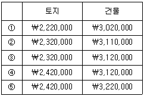
- ①
- ②
- ③
- ④
- ⑤
(정답률: 알수없음)
58. 확정급여제도를 시행하고 있는 (주)송림의 20×1년 관련 자료는 다음과 같다. 
위 자료를 이용할 때 20×1년 사외적립자산의 실제수익은?
- ￦200,000
- ￦250,000
- ￦300,000
- ￦350,000
- ￦400,000
(정답률: 알수없음)
59. (주)오월은 당기 중 다음과 같은 거래가 있었다. 
위 자료를 이용할 때 당기 현금흐름표 상의 재무활동 순현금흐름(유입-유출)은?
- ￦53,000
- ￦63,000
- ￦73,000
- ￦80,000
- ￦92,000
(정답률: 알수없음)
60. 다음은 20×1년 초에 설립한 (주)감평의 20×2년말 현재 자본금과 관련한 정보이다. 설립 이후 20×2년 말까지 자본금과 관련한 변동은 없었다.
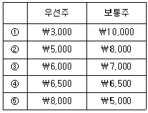
- ①
- ②
- ③
- ④
- ⑤
(정답률: 알수없음)
61. (주)서울은 20×1년 1월 1일에 ￦10,000에 기계장비를 취득하였다. 이 기계장비의 내용연수는 10년이며, 잔존가치는 없으며, 정액법을 이용하여 감가상각하였다. 20×1년 말과 20×2년 말에 (주)서울은 이 기계장치에 대한 손상 징후가 있다고 판단하여 손상검사를 실시하였는데, 이에 대한 정보는 아래와 같다. 
이 기간 중 내용연수, 잔존가치 및 감가상각방법에 변화가 없었다면, 20×2년 포괄손익계산서에 인식할 내용은?
- 손상차손 ￦350
- 손상차손 ￦400
- 손상차손 ￦500
- 손상차손환입 ￦550
- 손상차손환입 ￦1,200
(정답률: 알수없음)
62. 다음은 (주)한영의 당기 거래 내역이다. (주)한영이 무형자산으로 보고할 수 있는 상황들로만 모두 고른 것은?
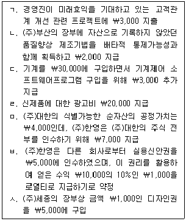
- ㄱ, ㄴ, ㄷ
- ㄴ, ㄷ, ㅅ
- ㅁ, ㅂ, ㅅ
- ㄴ, ㅁ, ㅂ, ㅅ
- ㄱ, ㄴ, ㄷ, ㄹ, ㅁ, ㅂ, ㅅ
(정답률: 알수없음)
63. (주)대한은 자사가 소유하고 있는 기계장치를 (주)세종이 소유하고 있는 차량운반구와 교환하였다. 두 기업의 유형자산에 관한 정보와 세부 거래 내용은 다음과 같다. 
이 거래와 관련한 설명 중 옳은 것은?
- (주)대한은 이 교환거래와 관련하여 유형자산처분이익 ￦5,000을 인식해야 한다.
- (주)대한이 새로 취득한 차량운반구의 취득원가는 ￦30,000이다.
- (주)세종은 이 교환거래와 관련하여 유형자산처분이익 ￦5,000을 인식해야 한다.
- (주)세종이 새로 취득한 기계장치의 취득원가는 ￦30,000이다.
- (주)대한과 (주)세종 모두 유형자산처분손익을 인식하지 않는다.
(정답률: 알수없음)
64. (주)서울은 20×1년 초에 만기 4년인 액면가 ￦10,000의 전환사채 100매를 액면가에 발행하였다. 표시이자율은 연 6%이며, 이 전환사채와 유사한 위험을 가진 일반사채의 시장이자율은 연 9%이다. 이자는 매년 12월 31일에 지급하며, 사채액면 ￦10,000 당 1주의 보통주(액면가 ￦5,000)로 전환이 가능하다. 이 전환사채 발행시 (주)서울의 전환권대가 금액은? (단, 현가계수는 다음 표를 이용하고, 단수차이로 인한 오차가 있으면 가장 근사치를 선택한다.)
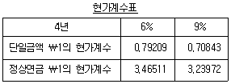
- ￦0
- ￦83,663
- ￦92,067
- ￦97,187
- ￦250,000
(정답률: 알수없음)
65. (주)한국은 20×1년 초에 (주)세종이 발행한 주당 액면금액 ￦500인 보통주식 10주를 주당 ￦1,000에 취득하면서 수수료로 총 ￦100을 지불하였고, 매도가능금융자산으로 분류하였다. 이 주식의 20×1년 말 주당 공정가치는 ￦800이며, 20×2년 말 주당 공정가치는 ￦1,300이다. (주)한국은 20×3년 4월 10일에 이 주식 전부를 주당 ￦1,100씩에 매각하였고, 처분시 부담한 수수료는 총 ￦600이다. (주)한국이 20×3년 4월 10일 이 주식을 매각할 때 인식해야 할 매도가능금융자산처분손익은?
- 처분이익 ￦300
- 처분이익 ￦400
- 처분손실 ￦2,000
- 처분손실 ￦2,500
- 처분손실 ￦2,600
(정답률: 알수없음)
66. 다음은 (주)강남의 20×1년도 재무비율과 관련된 정보이다. 
위 자료를 이용할 때 20×1년도 (주)강남의 매출원가와 자본은? (단, 유동자산은 당좌자산과 재고자산만으로 구성되며, 재고자산의 기초와 기말 금액은 동일하다.)
- ①
- ②
- ③
- ④
- ⑤
(정답률: 알수없음)
67. 20×1년 12월 1일 원화가 기능통화인 (주)서울은 해외 거래처에 US $5,000의 상품을 판매하고 판매대금은 2개월 후인 20×2년 1월 31일에 회수하였다. 이 기간 중 US $ 대비 원화의 환율은 아래와 같으며, 회사는 회계기준에 준거하여 외화거래 관련 회계처리를 적절하게 수행하였다. 
대금결제일인 20×2년 1월 31일에 (주)서울이 인식할 외환차익 혹은 외환차손은?
- 외환차손 ￦50,000
- 외환차손 ￦100,000
- 외환차익 ￦100,000
- 외환차익 ￦150,000
- 외환차손 ￦150,000
(정답률: 알수없음)
68. 20×1년 1월 1일에 (주)서울은 (주)부산의 발행주식 60%를 ￦180,000에 취득하여 지배권을 획득하였다. 주식취득시점 현재 (주)부산의 식별가능한 순자산의 장부금액과 공정가치는 다음과 같다. 
이 사업결합으로 인하여 (주)서울이 인식할 영업권의 금액은? (단, 비지배지분의 요소는 공정가치로 측정하지 않는다.)
- ￦18,000
- ￦30,000
- ￦32,000
- ￦38,000
- ￦54,000
(정답률: 알수없음)
69. (주)대한은 20×1년 1월 1일에 액면금액 ￦1,000,000(표시이자율 연 8%, 이자지급일 매년 12월 31일, 만기일 20×3년 12월 31일)의 사채를 발행하려고 했으나 실패하고, 9개월이 경과된 20×1년 10월 1일에 동 사채를 (주)세종에게 발행하였다. 20×1년 1월 1일과 사채발행일 현재 유효이자율은 연 10%로 동일하며, (주)세종은 만기보유목적으로 취득하였다. (주)대한이 20×1년 10월 1일에 사채발행으로 수취할 금액은? (단, 현가계수는 다음의 표를 이용하고, 단수차이로 인한 오차가 있으면 가장 근사치를 선택한다.)
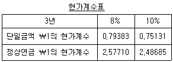
- ￦950,258
- ￦961,527
- ￦1,000,000
- ￦1,021,527
- ￦1,060,000
(정답률: 알수없음)
70. (주)서울은 영업 첫해인 20×1년의 법인세비용차감전순이익은 ￦800,000이고 과세소득은 ￦1,200,000이며, 이 차이는 일시적 차이로서 향후 2년간 매년 ￦200,000씩 소멸될 것이다. 20×1년과 20×2년의 법인세율은 40%이고 20×1년에 개정된 세법에 따라 20×3년부터 적용될 법인세율은 35%이다. (주)서울이 이 차이에 관하여 20×1년 말 재무상태표 상에 기록하여야 하는 이연법인세자산 또는 이연법인세부채의 금액은? (단, 이연법인세자산 또는 이연법인세부채는 각각 자산과 부채의 인식요건을 충족한다.)
- 이연법인세자산 ￦140,000
- 이연법인세부채 ￦140,000
- 이연법인세자산 ￦150,000
- 이연법인세부채 ￦150,000
- 이연법인세자산 ￦160,000
(정답률: 알수없음)
71. (주)대한은 매출원가의 20%에 해당하는 이익을 매출원가에 가산하여 판매하고 있으며, 당기에 완성된 모든 제품을 ￦180,000에 판매하였다. 제조간접원가 예정배부율은 직접노무원가의 60%이다. 당기의 원가자료가 다음과 같다면 기말재공품 평가액은? (단, 기초 및 기말 제품재고는 없으며, 제조간접원가 배부차이도 없었다.)
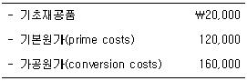
- ￦50,000
- ￦52,000
- ￦54,000
- ￦56,000
- ￦58,000
(정답률: 알수없음)
72. (주)대한은 A, B 두 제품을 생산·판매하고 있다. 두 제품에 대한 20×1년도 예산자료는 다음과 같다. 
회사 전체의 연간 고정원가 총액은 ￦262,500이다. A제품의 연간 손익분기점 매출액은? (단, 예산 매출배합이 일정하게 유지된다고 가정한다.)
- ￦1⑤,000
- ￦110,000
- ￦115,000
- ￦120,000
- ￦125,000
(정답률: 알수없음)
73. (주)대한은 실제원가에 의한 종합원가계산을 적용하고 있으며, 재공품 평가방법은 선입선출법이다. 다음은 5월의 생산 활동과 가공원가에 관한 자료이다. 
월초재공품과 월말재공품의 가공원가 완성도는 각각 60%와 40%이고, 공손품이나 감손은 발생하지 않았다. 월말재공품에 포함된 가공원가는?
- ￦56,000
- ￦60,000
- ￦64,000
- ￦68,000
- ￦72,000
(정답률: 알수없음)
74. (주)대한은 표준원가계산제도를 채택하고 있으며, 기계작업시간을 기준으로 고정제조간접원가를 제품에 배부한다. 다음 자료에 의할 경우 기준조업도는?
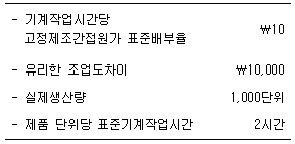
- 500시간
- 700시간
- 800시간
- 1,000시간
- 1,100시간
(정답률: 알수없음)
75. (주)대한은 단일 종류의 제품을 생산ㆍ판매하고 있다. 20×1년도 단위당 판매가격은 ￦4,000, 단위당 변동원가는 ￦3,500, 연간 총고정원가는 ￦500,000으로 예상된다. 20×1년 중에 특정 고객으로부터 제품 100단위를 구입하겠다는 주문(이하, 특별주문)을 받았다. 특별주문을 수락할 경우 단위당 변동원가 중 ￦500을 절감할 수 있으며, 배송비용은 총 ￦10,000이 추가로 발생한다. 특별주문을 수락하더라도 여유설비가 충분하기 때문에 정상적인 영업활동이 가능하다. (주)대한이 특별주문을 수락하여 ￦30,000의 이익을 얻고자 한다면, 단위당 판매가격을 얼마로 책정해야 하는가?
- ￦3,100
- ￦3,300
- ￦3,400
- ￦3,500
- ￦3,600
(정답률: 알수없음)
76. (주)대한은 단일제품을 생산ㆍ판매하고 있다. 제품 1단위를 생산하기 위해서는 직접재료 0.5kg이 필요하고, 직접재료의 kg당 구입가격은 ￦10이다. 1분기 말과 2분기 말의 재고자산은 다음과 같이 예상된다. 
2분기의 제품 판매량이 900단위로 예상될 경우, 2분기의 직접재료 구입예산은? (단, 각 분기말 재공품 재고는 무시한다.)
- ￦4,510
- ￦4,600
- ￦4,850
- ￦4,900
- ￦4,960
(정답률: 알수없음)
77. (주)감평은 단일 종류의 상품을 구입하여 판매하고 있다. 20×1년 4월과 5월의 매출액은 각각 ￦6,000과 ￦8,000으로 예상된다. 20×1년 중 매출원가는 매출액의 70%이다. 매월 말의 적정 재고금액은 다음 달 매출원가의 10%이다. 4월 중 예상되는 상품구입액은?
- ￦4,340
- ￦4,760
- ￦4,920
- ￦5,240
- ￦5,600
(정답률: 알수없음)
78. (주)감평은 20×1년 초에 신제품을 개발하여 최초 10단위를 생산하였으며, 최초 10단위의 신제품 생산과 관련된 제조원가는 다음과 같다. 
신제품 생산에는 90% 누적평균시간 학습효과가 있는 것으로 분석되었다. 추가로 30단위를 생산하여 총 40단위를 생산할 경우, 총 40단위에 대해 예상되는 변동원가는? (단, (주)감평은 신제품을 생산할 수 있는 충분한 여유설비를 확보하고 있다.)
- ￦70,880
- ￦72,880
- ￦76,680
- ￦78,680
- ￦80,880
(정답률: 알수없음)
79. (주)감평은 A제품과 B제품을 생산ㆍ판매하고 있으며, 다음 연도 예산손익계산서는 다음과 같다. 
회사는 영업손실을 초래하고 있는 B제품의 생산을 중단하고자 한다. B제품의 생산을 중단하면, A제품의 연간 판매량이 1,000단위만큼 증가하고 연간 고정원가 총액은 변하지 않는다. 이 경우 회사 전체의 영업이익은 얼마나 증가(혹은 감소)하는가? (단, 기초 및 기말 재고자산은 없다.)
- ￦175 감소
- ￦450 증가
- ￦650 감소
- ￦1,250 증가
- ￦1,425 증가
(정답률: 알수없음)
80. (주)대한은 완제품 생산에 필요한 A부품을 매월 500단위씩 자가제조하고 있다. 그런데 타 회사에서 매월 A부품 500단위를 단위당 ￦100에 납품하겠다고 제의하였다. A부품을 자가제조할 경우 변동제조원가는 단위당 ￦70이고, 월간 고정제조간접원가 총액은 ￦50,000이다. 만약 A부품을 외부구입하면 변동제조원가는 발생하지 않으며, 월간 고정제조간접원가의 40%를 절감할 수 있다. 또한 A부품 생산에 사용되었던 설비는 여유설비가 되며 다른 회사에 임대할 수 있다. A부품을 외부 구입함으로써 매월 ￦10,000의 이익을 얻고자 한다면, 여유설비의 월 임대료를 얼마로 책정해야 하는가?
- ￦5,000
- ￦6,000
- ￦7,000
- ￦8,000
- ￦10,000
(정답률: 알수없음)